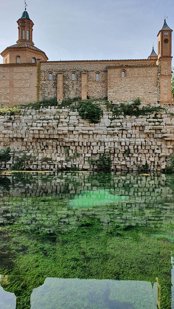

|
PRESA ROMANA DE MUEL
El dique de la presa romana
de Muel data del siglo I. Construida por los legionarios romanos que
fundaron la colonia de Caesaraugusta para su abastecimiento de agua. El
nombre de la Legio IIII aparece grabado en los sillares de la presa.
La presa se ubicaba en el cauce del Río Huerva.
Se trata de una presa de gravedad, sin espaldón construida con sillares
de caliza en seco en hiladas horizontales. El dique mide entre 60 y 90
metros de longitud, unos 10 metros de anchura, y unos 14 metros de
altura.
En el siglo III ya estaba prácticamente aterrada y se inutilizó.
En 1770 se construyó sobre la misma presa la Ermita de la Virgen de la
Fuente, que conserva en su interior cuatro pinturas de Francisco de Goya
de su primera época.

|